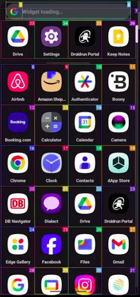

MobileRun lets a language model control a real Android or iOS phone from a plain text goal. It runs in one of two modes, depending on how hard the task is.
It reads the goal and acts right away. No planning. Best for simple one-step tasks.
goal → action → done
A Planner and an Executor work in a loop. Best for multi-step tasks that may need correction.
goal → plan → act → check → repeat
In reasoning mode there are 2 agents: a Planner and an Executor. Each has a different role, reinforced by its prompt.
The split keeps the smart planning in one place. The Executor just acts, so it cannot drift off the plan.
Its prompt: "track progress and devise high-level plans."
Its prompt: "you are a low-level action executor."
To act, the agent must know what is on screen and where to tap. MobileRun labels the screen so the model can pick an element instead of guessing coordinates.

MobileRun reads the accessibility tree (the list of UI elements the OS exposes) plus a screenshot. Every element gets a number, drawn as a colored box on the screen. The model then says click(34) and the framework maps that number back to a real tap point.
Elements have numbers. The agent taps by index.
{ "action":"click", "index":34 }Some apps hide it (Messenger, banking, games). A grid is drawn instead and the agent taps by pixel.
{ "action":"tap", "x":540, "y":1180 }x= and y= pixel value.
requires_coordinate_tools is True only when the tree is blocked (the screenshot-only provider), else False. Coordinate tools tap by pixel: click_at(x,y), long_press, swipe(from,to). Index tools use click(index) and type(text,index).
One run through reasoning mode. Watch control pass between the Planner and the Executor.
{"action":"open_app","text":"Settings"}. The result is saved.[12] "Display" in the tree and taps it: {"action":"click","index":12}.